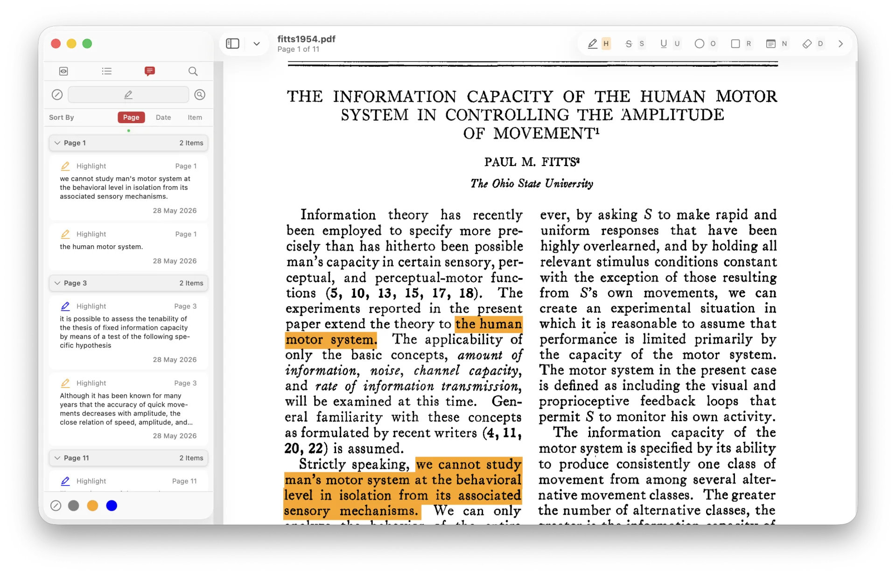
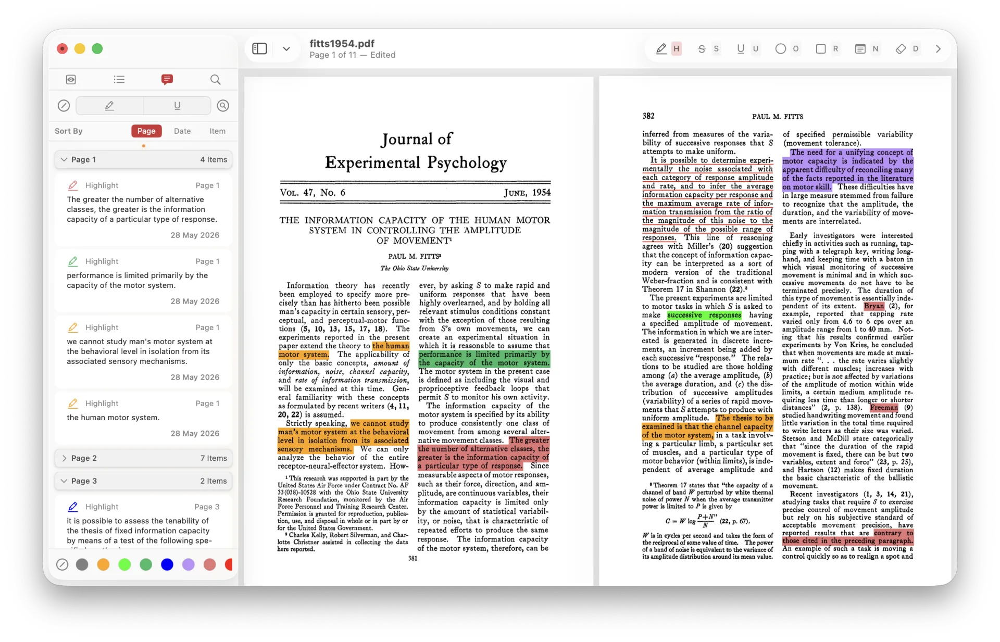
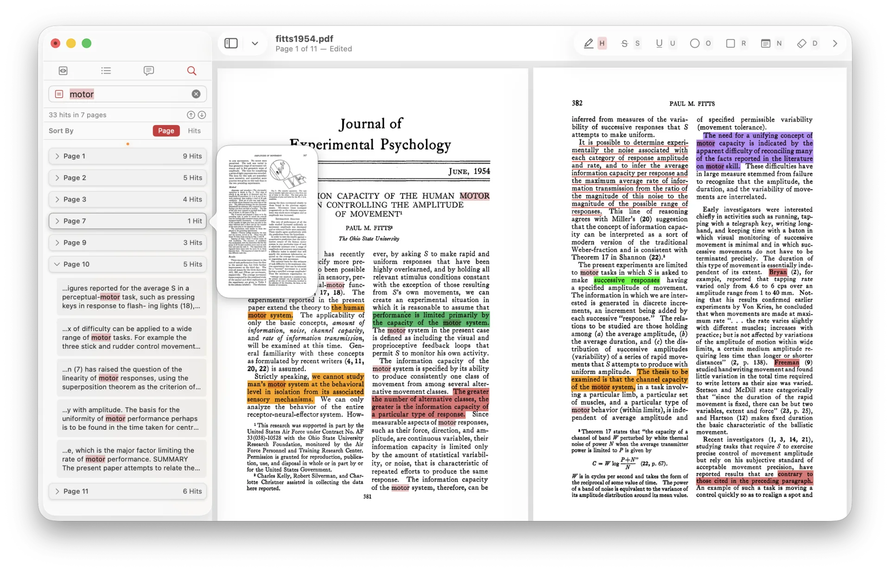

工欲善其事，必先利其器
From the Analects of Confucius, Book XV. A student asked how to practise virtue; Confucius answered with a craftsman's metaphor — a workman who wishes to do his work well must first sharpen his tools. Two and a half millennia later, the line survives as a quiet argument that the quality of the work is inseparable from the quality of the instrument.
— 《论语 · 卫灵公》
A document reader for the keen.
One-key annotation, native performance, and annotation management that holds up across documents hundreds of pages long. Your cursor never leaves the page.

Most PDF readers send you back to a toolbar every time you annotate. Angora splits the responsibilities cleanly: your cursor stays at your reading position; your keyboard runs the tools, the colours, and the page.
Keys 1 to 9 apply any of nine customisable colours. Press 0 to return to the default. Angora remembers the last colour you used for each tool.
Every feature in Angora is designed to minimise interruption and keep you focused on the document.
Customisable, tool-sensitive, cursor-independent, menu-free shortcuts — for every tool. Press a letter, select your text, and you are done. Any less, and we would be doing the job for you.
Press 1 to 9 to apply any of nine customisable colours. Press 0 to return to the default. Angora remembers the last colour you used for each tool.
Built in SwiftUI on top of PDFKit — not Electron, not a web view. Instant startup, smooth scrolling, low memory, and real system integration.
Sort by page, date or density. Filter by type and colour. Name your colours, write inline Markdown comments, and search across annotations.
Cmd-F searches the document, with results grouped by page. Step through matches with Tab, toggle exact-match for case-sensitive queries, or sort by page or hit count.
Resize and reposition rectangles and ellipses. Copy, paste and duplicate them with standard shortcuts, and move them across pages.
When you are working through a three-hundred-page report, scattered annotations are not enough.

Sort annotations by page order, creation date or density. Group them into collapsible sections, with a small coloured dot that doubles as the expand-and-collapse control.
Toggle annotation types on or off with a visual filter bar. Narrow by colour when you use colour to encode meaning. Name your colours from the context menu — named colours sort to the front.
Hover over any annotation to reveal edit and delete controls. Comments render inline Markdown — write in plain text, see the formatting in place.
Cmd-Shift-F searches across annotation text and comments. Restrict to highlighted text, comments or both, and combine with and/or logic for precise filtering.
Press Cmd-F to search the full document. Results are grouped by page, with surrounding context for every hit.

Step through matches — each result scrolls into view and is highlighted in the PDF.
Toggle exact-match mode for case-sensitive, precise queries.
Sort results by page order or by number of hits per page.
Hover any page header in the search or annotation lists to see a live thumbnail. Click to jump there.
Type a page number or label and jump instantly. Supports non-numeric labels such as i, ii, iii.
Choose between a standard toolbar and a floating Liquid Glass overlay. Customise colour, opacity and spacing, and drag the overlay anywhere on the page.
Open multiple documents, each in its own window with independent state. Shortcuts are scoped to the active window.
Navigate structured documents through the outline panel in the sidebar.
Subtle haptic cues when hovering annotations or activating tools, on supported hardware.
Multi-language support. Change the language in Settings and restart to apply.
A first-launch walkthrough covers the annotation workflow, shortcuts, colours and sidebar controls.
For macOS 14 (Sonoma) or later. Apple Silicon or Intel.
Free during Beta. No account required.